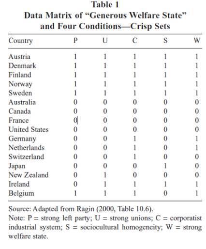
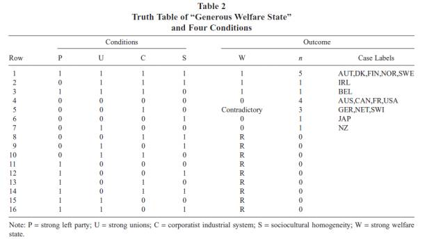
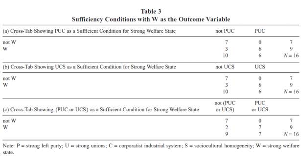
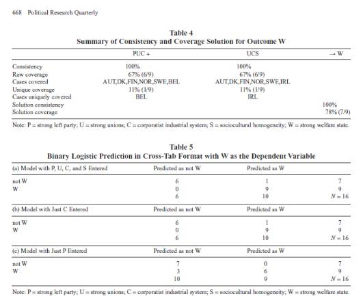
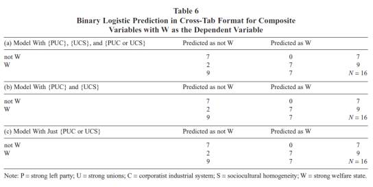

还有这种操作？十分钟学会QCA，顺带复习Logistic回归
收录于合集
文献来源：Grofman,Bernard, and C. Q. Schneider. “An Introduction to Crisp Set QCA, with aComparison to Binary Logistic Regression.” Political Research Quarterly, 62.4(2009):662-672.
BernardGrofman ，加利福利亚大学欧文分校 (UC Irvine) 数学行为科学学院教授，研究方向为比较民主化、比较政治、选举政治、公共舆论和投票行为。个人主页：https://www.researchgate.net/profile/Bernard_Grofman
CarstenQ. Schneider，布达佩斯中央欧洲大学政治学系主任、教授，研究方向为比较民主化、比较政治和定性与多元研究方法，在集合论领域具有突出贡献。个人主页：https://people.ceu.edu/carsten- q_schneider
**
**
质性比较分析（ QCA）是比较政治学研究方法中的后起之秀，目前部分国内学者已经对其进行了初步地译介，也有部分学者尝试用QCA方法研究社会运动（如释启鹏等，2017）、族群冲突、民主转型等具体问题。然而，由于完整教材与操作手册尚未翻译，QCA对于初学者而言仍然具有一定门槛。事实上，QCA虽然蕴含着精巧的逻辑学与集合论思想，但其初级操作的难度要远小于统计方法。在此，政文观止编辑特编译一篇对QCA方法介绍与探讨的文章，以期帮助读者熟悉和掌握这种另辟蹊径的科学研究方法。
**
**
一、 QCA的核心特质
作者认为，QCA方法的基础在于对条件必要性与充分性的深刻理解。在正确操作的前提下，QCA方法可以很好地揭示复杂因果关系，同时还可以处理因果关系中的等效性（equifinality）、多效性（multifinality）和不对称性（asymmetry）。作者通过如下这个真实案例来展示QCA的独特魅力。
下表展示的是个工业化民主国家的福利情况及其相关因素。W表示福利国家体系，P表示强大的左翼政党，U表示强大的工会，C表示社团主义的工业系统，S表示社会文化的同质性。单元格赋值为1表示该国存在该情形，单元格赋值为0则表示该国不存在该情形。各国的情况如下表所示：

如果将W视为结果变量，而将P、U、C、S都视为条件变量，就可以解读出各国的条件组合与结果取值。通过观察不难发现，部分国家拥有着完全一致的条件组合与结果取值，通过整理，可以得出如下的真值表：

根据乘法原理不难发现，理论上P、U、C、S这四个条件在0-1的取值中有16种组合，然而实际情况下只存在7种条件组合。前3种条件组合指向了结果变量的出现，第4、6、7种条件组合则指向了结果变量的缺位，第5中条件组合下结果变量的取值可能为1也可能为0 ，因此被判断了逻辑冲突。得到条件组合与变量取值后，我们就可以通过布尔代数的联结来揭示因果关系。布尔代数中的“*”表示“与”，“+”表示“或”，“~”表示“非”。那么根据前三种条件组合，我们就可以得出三条指向结果变量出现的因果路径。即：
W= PUCS + ~PUCS + PUC*~S
如果对其用自然语言进行解读，结果就是：福利国家体系需要有强大的左翼政党且有强大的工会组织且有社团主义的工业体系且有社会同质性；或者没有强大的左翼政党且有强大的工会组织且有社团主义的工业体系且有社会同质性；或者有强大的左翼政党且有强大的工会组织且有社团主义的工业体系且没有社会同质性。
根据布尔代数的运算法则，可以对因果路径进行化简与合并，最终得出结果如下：
W= U*C（P+S）
如果对其用自然语言进行解读，结果就是：在同时具备强大工会组织和社团主义的工业体系的情况下，强大的左翼政党和社会同质性这两个条件只要具备其一就可以产生福利国家体系。
那么，这一结果是否可以说明福利国家体系的充分条件呢？QCA要求我们对结果的一致性（consistency）和覆盖率（coverage）进行检验。一致性检验的是所给出的条件组合是否必然指向结果变量的出现，即有没有可能出现结果变量缺位的情况。覆盖率检验的则是给出的路径组合能够覆盖多少案例。根据表2可以得知，U*C（P+S）这种条件组合必然指向结果变量的出现，因此一致性是100%；9个正面案例（即结果变量取值为1）中7个被成功解释了，因此总覆盖率就是7/9，即78% 。具体情况如下表所示：

二、QCA方法的目标与意义
通过对上文案例的解读，作者认为QCA具有独特的理论目标与现实意义。首先，QCA方法的核心诉求就在与条件组合的具体揭示，包括必要条件和充分条件。对于定量研究而言，清晰地识别某一个案例的充分和必要条件是没有统计学意义的。然而对于定性研究，正确认识条件与结果在某一案例中的具体情况确是进一步研究不可或缺的基础。定性研究者普遍认为，对单个或者少数案例的研究同样可以揭示因果关系。其次，QCA强调等效性。在QCA看来，不同的原因可能会导致相同的结果，因此会存在多条平行的因果路径。QCA的重点并不在于从逻辑上发现可能的因果关系，而在于结合现实具体解释相关案例的因果机制。第三，QCA不仅关注什么样的条件变量会和结果变量一起出现，更为关注条件变量之间的相互影响与逻辑关系。第四，QCA强调因果关系的不对称性，通过表二不难发现产生W和~W的路径是完全不同的，~W的路径并不是W路径的简单否定。最后，除了生成对因果关系的理论期待外，QCA方法在操作过程中还可以为研究者揭示更多信息，包括对极端案例的识别、对既有理论的检验等等。
三、QCA与二元Logistic回归的比较
为了进一步了解QCA方法的特点，作者用二元Logistic回归处理了上文案例中的数据。得出了如下的结果：

首先以W为因变量，而将自变量P、U、C、S全部放入Logistic回归模型。模型结果显示，全部9个正面案例和7个负面案例中的6个被成功预测。模型的参数Cox and Snell R2=0.68， Nagelkerke R2 =0.91。这说明从总体上看，本案例在QCA和Logistic回归两种方法下的结果是相互印证的。P、U、C、S对W具有相当的解释力。当然，受制于样本量等原有，自变量P、U、C、S对因变量W均没有统计学显著性。然而通过考察，作者认为，QCA和Logistic回归最终呈现出的结果具有截然不同的意义。
首先，Logistic回归混淆了正面案例与负面案例中的因果关系。换言之Logistic回归视野中的因果关系是对称的，在揭示了P、U、C、S对W的影响效应的同时，P、U、C、S对~W的影响效应也就被说明了。其次，Logistic回归只呈现出了概率意义上的因果关系，但却抹去了各个案例的具体情况，我们不知道各个变量在不同案例中的具体取值，甚至无法知晓哪一个案例因为哪些变量的异常而没有被成功预测。第三，Logistic回归只能模糊地测量自变量P、U、C、S对因变量W的影响效应，却既无法判断各个条件的充分性与必要性，也无法识别自变量之间的相互关系，更无法生成准确而真实的因果路径。
四、用交互项来模仿条件组合
从上文的结果不难发现，Logistic回归和QCA的结果虽然相似，但其实质含义是完全不同的，其中一个重要区别就在于Logistic回归无法处理自变量之间的相互关系和不同组合。对此，作者尝试使用“交互项”来模仿QCA中的条件组合。经过布尔代数的运算与重新赋值，作者通过新的自变量建立起如下的新模型：

从模型来看，Logistic回归的结果似乎具备了更多的现实意义，尤其是其对条件组合的揭示。然而，作者强调，这种模仿仍然存在严重问题。首先，在小样本中，调整后的自变量仍然不具有任何的统计学显著性。在这种情况下，我们无法通过Logistic回归来准确判断模型的适用性。其次，虽然用交互项模仿了条件组合，但Logistic回归仍然无法判断条件（组合）对于结果的充分性或必要性，模型给出的结果依然只是模糊的概率。其次，多于两个因变量的交互项对于回归分析而言是闻所未闻的，如何处理和解读这些交互项已经超出了统计学家的能力范围。
**
**
编后记：
从这篇文章中我们可以清晰地发现QCA方法的独特魅力。必须强调的是，QCA虽然充分运用了数学思想，但仍然是一种案例导向的定性研究方法。其与回归分析等变量导向的定量研究方法在价值取向、操作方法和结果呈现等诸多方面都有着本质的不同。因此，切不可盲目地宣称QCA已经完全超越了定量与定性之争。当然，这篇文章对于QCA的介绍与探讨较为浅显，有很多重要的问题（如因果关系的不对称性，定量与定性研究的本质区别等）还没有具体展开。本文介绍的清晰集QCA也只是QCA最原始的形态，其近年在模糊集、时间序列等方面的最新发展值得我们持续关注和学习。
推荐阅读：
1. 加里·格尔茨, 詹姆斯·马奥尼, 两种传承：社会科学中的定性与定量研究[M]. 格致出版社, 2016.
2. 高奇琦, 比较政治学前沿．第3辑：比较政治学的质性与量化之争[M].中央编译出版社, 2015.
3. 唐世平. 超越定性与定量之争[J]. 公共行政评论, 2015(4):45-62.
4. 唐睿, 唐世平. 历史遗产与原苏东国家的民主转型——基于26个国家的模糊集与多值QCA的双重检测[J]. 世界经济与政治, 2013(2):39-57.
5. 郝诗楠, 高奇琦. 分离主义的成与败:一项基于质性比较分析的研究[J]. 世界经济与政治, 2016(6):113-133.
6. 郝诗楠. 质性比较分析方法及其在政治学研究中的应用[J]. 国外理论动态, 2016(5):58-67.
7. 高奇琦. 从单因解释到多因分析:比较方法的研究转向[J]. 政治学研究, 2014(3):3-17.
8. 释启鹏,韩冬临. 当代社会运动中的政权崩溃——“颜色革命”与“阿拉伯之春”的定性比较分析[J]. 国际政治科学,2017,(01):130-155.
9. 詹姆士·马洪尼, 高奇琦. 质性方法论与比较政治[J]. 比较政治学前沿, 2012(5):145-160.
10. Mahoney J, Rueschemeyer D. Comparative historical analysis in thesocial sciences[M]. Cambridge University Press, 2003.